Bandung.Qiwary
Qiwary Inovasi Teknologi

Sekilas Bandung.Qiwary
Bandung.Qiwary merupakan layanan web untuk mendukung partisipasi publik/ masyarakat dalam menciptakan lingkungan kota Bandung (dan sekitarnya) yang lebih baik, masa kini dan masa yang akan datang. Dengan layanan ini, setiap warga Bandung dapat mengajukan usul, protes atau komplen maupun mengadukan adanya masalah lain, terkait dengan keadaan sosial dan fasilitas publik di area Bandung sekitarnya.
Crowdreporting
Warga dpt melaporkan masalah lokal spt: jalan rusak, berlubang, timbunan sampah, saluran mampat, pencemaran, penerangan jalan, macet berulang, parkir yg tdk semestinya, lampu merah malfungsi, galian yg mengganggu, bangunan tdk terurus, reklame sembarangan, taman dan pepohonan, pasar dan PKL, dll. Pendek kata, tentang semua hal di sekitar kita, yg tidak semestinya atau yang seharusnya menjadi lebih baik. Isu atau masalah yg dilaporkan akan ditampilkan dgn posisi/ lokasi pada peta.
Crowd-Problem-Solving
Setiap laporan dapat dilengkapi dengan keterangan dan foto yg sesuai. Setiap orang dapat memberi komentar atas laporan dan memberikan saran solusi penyelesaian sebagai upaya untuk meningkatkan kualitas lingkungan kita bersama. Setiap laporan masalah diberikan sebuah label: open, valid atau closed. Label ini berguna untuk mengetahui status/ perkembangan permasalahan dari waktu ke waktu.
B.Q.ORG Webapp
Halaman Utama
Halaman Utama menampilkan data yg masuk dalam bentuk list (di sebelah kiri) dan peta lokasi (kanan) dari setiap laporan. Tersedia fasilitas pengaturan untuk memudahkan pengguna dalam mendalami dan mencari laporan yg relevan. Tampilan dapat disesuaikan dalam hal jumlah dan urutan (misalnya berdasarkan waktu atau jumlah dukungan/vote) serta difilter berdasarkan kategori masalah atau status laporan tersebut. Semua fitur di halaman ini dapat dijalankan, tanpa Anda harus login atau registrasi terlebih dahulu.
Halaman Detil
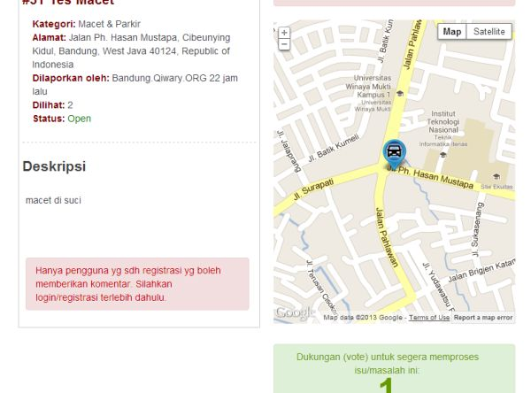Halaman Detil CNT'D
Dengan melakukan klik pada sebuah item laporan atau pin/infobox pada peta di Halaman Utama, Anda memasuki Halaman Detil. Semua informasi terkait dengan item laporan tersebut ditampilkan disini. Selain itu, Anda juga dapat terlibat aktif untuk berdiskusi dengan berkomentar, atau memberikan dukungan (vote) untuk penyelesaiannya. Fitur komentar dan pemberian dukungan baru akan aktif, apabila anda telah login/masuk.
Pengaturan
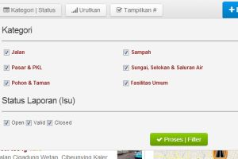 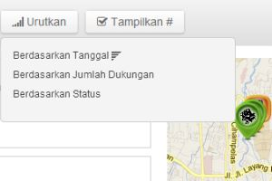 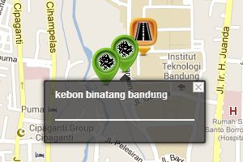 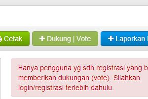 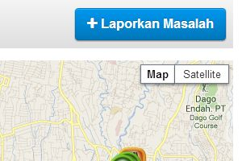 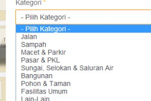Pelaporan
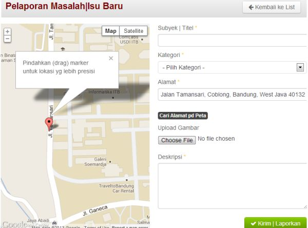Pelaporan CNT'D
Anda dapat melaporkan isu/permasalahan baru melalui halaman pelaporan, langsung melalui antarmuka web (alternatif yg lain adalah melalui aplikasi mobile) . Di sebelah kiri ditampilkan peta dengan sebuah marker yg dapat anda pindahkan (drag) ke lokasi di mana terjadi permasalahan yg ingin Anda laporkan. Subyek, kategori, alamat dan deskripsi wajib diisi. Subyek atau judul, mohon untuk ringkas dan jelas.
Pelaporan CNT'D
Kategori dapat dipilih pd dropdown, apabila ada beberapa kategori, pilih salah-satu yg paling pas/dominan. Alamat akan ter-update otomatis apabila marker dipindahkan, tetapi jg bisa di-edit manual apabila kurang sesuai (alamat diperoleh menggunakan layanan translasi geokoordinat dari Google). Kemudian tambahkan deskripsi dengan jelas, singkat dan padat tentang masalah yang ingin anda sampaikan.
B.Q Mobile (IMC Bandung)
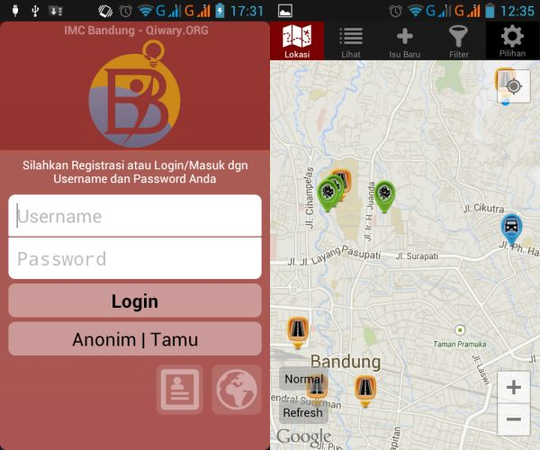Screen & Navigasi
Aplikasi terdiri dari beberapa screen. Landing screen dimana Anda dapat login/masuk, registrasi, membuka halaman web bandung.qiwary.org (misalnya untuk me-reset sandi) atau langsung masuk sebagai tamu/anonim (tanpa login). Kemudian ada sejumlah screen dengan navigasi tab: Lokasi, Lihat, Isu Baru dan Pilihan.
Screen & Navigasi CNT'D
Aplikasi ini dapat digunakan tanpa login/ registrasi. Tetapi beberapa fitur tidak dapat Anda gunakan pada mode ini, antara lain: posting isu/ permasalahan baru, memberikan komentar dan memberikan dukungan (vote). Proses login dapat dilakukan pada landing screen atau pada tab Pilihan, opsi Akun.
Tab Lokasi
Screen tab Lokasi berupa tampilan peta dengan marker di sejumlah lokasi, tergantung dengan data laporan yg diambil dari server. Screen ini kurang lebih sama fungsi-nya dengan tampilan peta pada aplikasi web (halaman utama). Diteksi otomatis lokasi Anda saat ini, diplot dengan lingkaran biru (data dari GPS, selular atau WIFI). Tampilan bersifat interaktif, Anda dapat melakukan zooming (multi-touch) dan mengaktifkan infobox dengan sentuhan. Apabila sebuah infobox ditekan, screen akan berganti menjadi screen tampilan detil item laporan tersebut.
B.Q MOBILE (IMC BANDUNG)
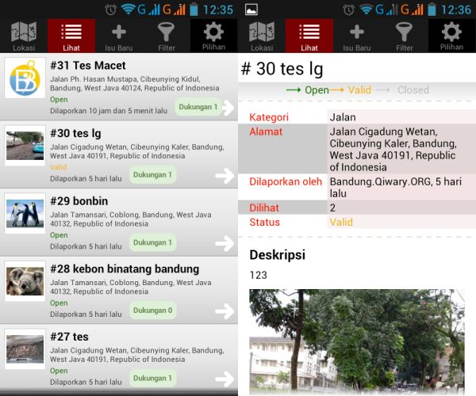Tab Lihat
Apabila pada tab Lokasi, data laporan diplot di dalam sebuah peta, tab Lihat menyajikannya dalam sebuah list/ daftar. Fungsi tab ini, kurang lebih sama dengan representasi list di halaman utama aplikasi web bandung.qiwary.org.
Tab Lihat CNT'D
Seperti pada tab Lokasi, jika sebuah item laporan dipilih, screen akan berubah menjadi screen yg menampilkan detil dari item laporan terkait. Screen detil ini ekivalen dengan halaman detil pada aplikasi web, dimana Anda dapat memberikan komentar dan/atau dukungan untuk item tersebut. Fitur untuk menambahkan komentar dan memberikan dukungan hanya ada setelah Anda login.
B.Q MOBILE (IMC BANDUNG)
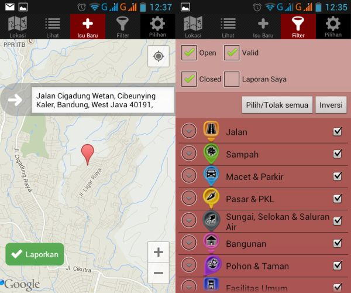Tab Isu Baru
Disini Anda dapat melaporkan isu/permasalahan baru, sama seperti pada halaman pelaporan di bandung.qiwary.org. Tab ini terdiri dari dua buah screen, yg baru dapat aktif setelah Anda login. Untuk pelaporan, tiga form wajib untuk diisi: kategori yg sesuai, subyek/titel dan penjelasan singkat. Dianjurkan untuk melapirkan foto/gambar sebelum lanjut ke screen berikutnya yg menampilkan data lokasi.
Tab Filter
Tab ini berfungsi untuk mengatur data yg ditampilkan (tab Lokasi atau tab Lihat) dengan memfilter data berdasarkan kriteria tertentu. Terdiri dari dua bagian: (1) filter berdasarkan status; dan (2) filter berdasarkan kategori. Data yang ditampilkan juga tergantung dari jarak relatif lokasi laporan dengan lokasi Anda saat ini (pengaturan jarak jangkauan dapat dilakukan melalui tab Pilihan, by default 5 km).
Try Bandung.Qiwary
Coba Bandung.Qiwary!
Bandung.Qiwary versi mobile (IMC Bandung) saat ini baru bisa diakses untuk platform Android. Unduh aplikasi di http://goo.gl/dpykYY
Kunjungi Website Bandung.Qiwary!
Website Bandung.Qiwary dapat diakses melalui
http://bandung.qiwary.org